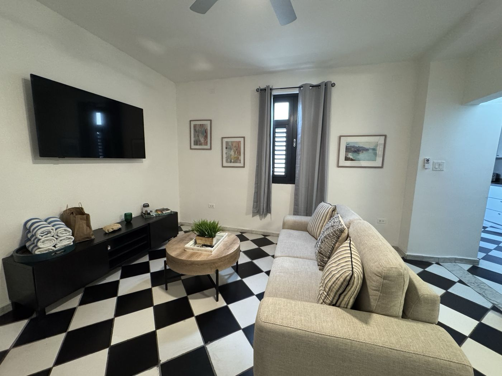
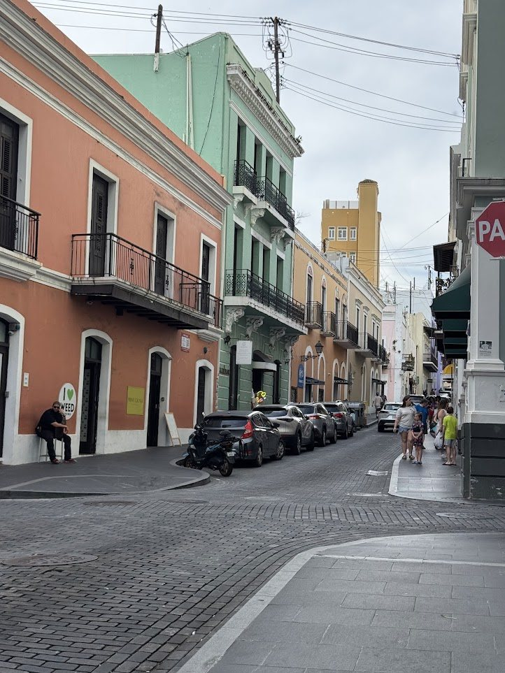
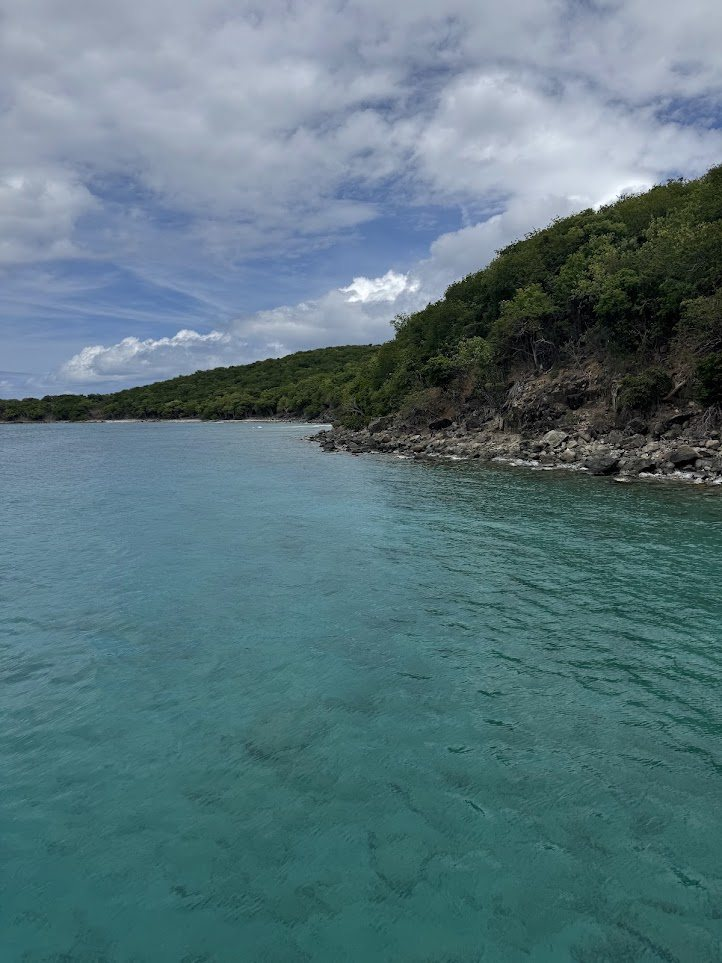
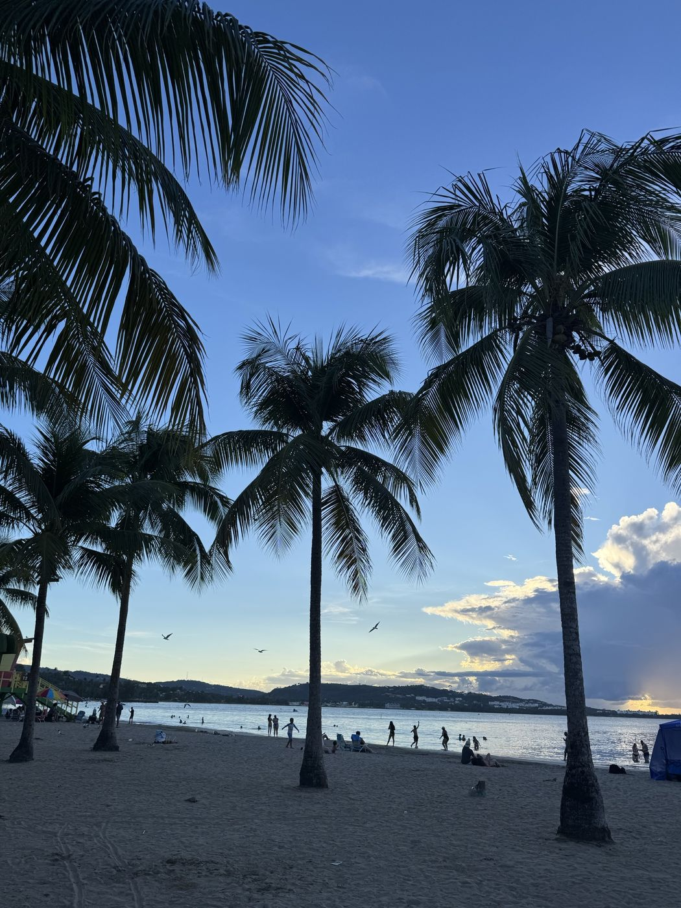

Overview
Puerto Rico is a perfect destination for a girls trip, and I planned this one as a birthday trip with my girlies. It’s part of the US, so it’s easy to reach from the mainland, but it feels like you’ve gone to another country. April is a wonderful time to go.
There were six of us, six days, and one home base in Old San Juan. We did a catamaran day to Culebra, a rainforest day in El Yunque, a zipline, a night kayak through a bioluminescent bay, and a lot of eating in between. Below is the day-by-day, then the story of each part.
At a glance
Where to Eat
Meals & drinks
Things to Do
Day-by-day itinerary
1DayArrive, settle in, and eat at DeaverduraOld San Juan
2DayCulebra by catamaranFajardo · Culebra
3DayEl Yunque, Luquillo, and La PlacitaEl Yunque · Luquillo · Santurce
4DayZiplining, Luquillo lunch, and a bioluminescent kayakEl Yunque · Luquillo · Laguna Grande
5DayForts, coffee, and salsaOld San Juan
6DayYoga on the beach and homeSanturce → SJU
Getting around and where we stayed
With a group of six, a rental car was the only option that made sense. It’s hard to get outside of Old San Juan without one. We ended up with a minivan, and at first we weren’t sure how it would handle the busy streets around San Juan or the winding roads up El Yunque. It was no problem at all, and it was convenient to have all six of us in one car.
We picked Old San Juan as our home base because everything we wanted to do was about an hour’s drive away, and we wanted to enjoy the nightlife in the old city. Puerto Rico is a big island, so keep in mind that you’ll only cover a fraction of it. We stayed on the east side of the island for our adventures, and it was worth the drive each time.
Old San Juan
We stayed in an Airbnb in Old San Juan, and it was really centrally located. We could walk to local attractions, and I loved the details of the Old San Juan architecture all around us.

If you go the Airbnb route, try to find one owned by a local Puerto Rican. The island has a housing crisis, and out-of-town owners buying up property for short-term rentals contribute to it.
Old San Juan walking tours (opens in a new tab) · El Morro (opens in a new tab)
Eating and wandering in Old San Juan

Our first night: Deaverdura
Our first night, we went to a restaurant called Deaverdura. There was quite a wait, but this was by far our favorite meal of the trip, so I’d highly recommend it. We had so many delicious things: local cocktails, fish, empanadas, plantains. One of my favorite parts of traveling with a group is being able to try a lot of different things.
Piña coladas and mofongo at Barrachina
Old San Juan has some really cute stores, so we spent part of the afternoon browsing before heading to Barrachina. We really wanted to follow up on the local lore about the invention of the piña colada, so we went to Barrachina. I later found out it’s very contentious who actually invented it. It was either Barrachina or another hotel on the island, which we unfortunately didn’t make it to. The drinks at Barrachina were great either way, and you can get them with or without alcohol.
We also used the stop to try mofongo, one of the best-known dishes on the island. It’s a plantain-based dish, widely available (especially from food trucks), and you can get it with different meats or vegetarian. I loved the vibe at Barrachina: beautiful decor full of plants, great lighting, and an outdoor patio. And of course, being a girls trip, we made sure to do our little photoshoots here.
Anita’s ice cream
There’s always a place that becomes central to the trip, and for us it was Anita’s. The ice cream options are endless, and every flavor is high quality and well made. We went back at least three times, and my favorite was the tropical flavor. Go as many times as you can.
Culebra by catamaran

Our first big excursion was a day trip to Culebra, and I’d highly recommend it. The water was unbelievably blue, and snorkeling over the coral reef, surrounded by marine life, was a really special moment.
The day was also well organized: they prepared all the food for us, and we snorkeled, then relaxed on the beach. One of the best parts was, for sure, the unlimited cocktails.
A coconut stop on the way back
On the way back, we stopped at Frutera Flores, a small coconut stand with really good coconuts. I went for a coconut ice cream, which was so fresh and refreshing in the tropical heat.
East Island Excursions (opens in a new tab) · Fajardo marina (opens in a new tab)
El Yunque and Luquillo
This day was all about exploring El Yunque: the forest, the waterfalls, and the pools. We fueled up first at Finca Cialitos in Old San Juan, where I got an incredibly refreshing fresh-pressed juice and a blended iced coffee with hazelnut and banana. It was so good that I went back for a second one. Then we did a mini road trip, checking out the attractions along the way.
The visitor center and Yokahú Tower
The visitor center is a good stop to have on your list. It has food, restrooms, and fun little souvenirs, and it’s beautifully designed. Of the many great viewpoints, Yokahú Tower is the one to climb. It’s all stairs, but it’s short, and the view of the island’s coastline is expansive.
A waterfall and the swimming hole
We also did a small hike to a waterfall (Juan Diego Falls), and then came one of my absolute favorite moments of the trip: finding a swimming hole. The water was so peaceful. We were a bit intimidated going in because there were so many fish, but we quickly realized they move away as soon as you step in. It was so magical and otherworldly in a way that photos don’t capture.
El Yunque is a really unique place. We loved hearing the Puerto Rican coquí, the little frog, and there was so much flora to look at.
Luquillo beach kiosks
On the way back, we had definitely worked up an appetite from swimming and exploring all day, so we stopped at the Luquillo beach kiosks for snacks. I didn’t love the coconuts here because I chose the small ones, and they had no meat on them. Go for the bigger ones, which are more likely to have both water and meat. We watched the sunset from the beach, and it was so beautiful.

El Yunque tours (opens in a new tab) · El Yunque (opens in a new tab) · Luquillo Kiosks (opens in a new tab)
Zipline and the bioluminescent bay
Ziplining in El Yunque
In true adventure girls trip fashion, the next day was back to the El Yunque area for a ziplining adventure. It’s a perfect place for it, so lush and fun to fly through. The operators were flirty and playful and kept the vibes up, which added to the experience. Everyone had a great time, even the people who had never ziplined before, and everything felt very safe.
Lunch at Luquillo, again
We ended up back at the Luquillo beach kiosks. Right on the beach there’s a really good stand called Mis Cocos, where I devoured the shrimp poke with coconut rice. It was one of the most delicious things I had on the trip, and there was a lot of competition. I tried another coconut and had the same too-small problem again. This is also where my friends almost got attacked by a crab (opens in a new tab).
Bioluminescent kayak tour
We stayed in the area because we were waiting to do a bioluminescent kayak tour. These are very popular in Puerto Rico and they book up fast, so definitely book in advance if you have a group.
A few things we didn’t expect. The bay we launched from smells really, really bad, so be prepared for that. If you’ve never kayaked before, it’s not impossible, but it’s at night, so visibility is low. The crew did a good job helping us navigate, but you’re paddling through a forest of low-hanging leaves and trying to steer around other kayaks. Getting to the lagoon where you see the bioluminescence takes some trust in your partner and your navigation.
The bioluminescence wasn’t super strong the day we went, but it was still a really unique adventure, and a lot of fun trying to figure it out. And of course, after all of that, we went back to Anita’s.
JungleQui zipline (opens in a new tab) · San Juan Tours bio bay kayak (opens in a new tab) · Las Croabas (opens in a new tab)
Nights out: Calle San Sebastián and La Placita
One of the main reasons we stayed in Old San Juan was the nightlife. On our first night, we were very close to Calle San Sebastián, the main street in Old San Juan for going out. We popped into El Cafetín and La Factoría, and the vibe was so fun, with reggaeton playing and so many people out and about enjoying the tropical weather.
Another night, instead of the main calle, we tried La Placita, a short Uber ride away. It had a completely different vibe: very busy, very party. We saw people hanging out with anacondas, and there was a different kind of music coming from every direction. If you’re looking for a different scene, it’s a great option. Personally, we preferred staying in Old San Juan, which felt much classier, especially La Factoría.
La Factoría sometimes has salsa nights, and if you love dancing, it’s so fun to watch people out busting their moves in a social crowd. The drinks are excellent too.
La Placita (opens in a new tab) · La Factoría (opens in a new tab)
The last days: forts, Lala, and yoga on the beach
A diner breakfast
The next day we went to a local diner-style spot next door called Cafetería Mallorca. The food was amazing, but the service was a bit standoffish. Not enough to keep us from going back, though. It’s an excellent place to try some local favorites, like a Mallorca sandwich or a pigeon peas and chicken gumbo.
Forts on a humid day
We had been lucky with good weather so far, but this day was very humid and hard to get around in. We explored the old historic forts, which were very interesting, though we didn’t stay long in the heat. I think one ticket covers both sides, and it seems like you can walk between them, but on a humid day I’d recommend driving or taking an Uber. They’re worth a visit.
Afterward, we got coffee at Don Ruiz, and it was really good. I ended up buying a bag of beans to take home. If you’re a coffee lover, a bag of beans makes a wonderful souvenir, because it lets you feel like you’re still a little bit there. Something else that was really cute throughout the trip: we saw so many adorable stray cats all around.
Dinner at Lala
Lala is Bad Bunny’s restaurant, in a mall a short drive outside of Old San Juan, and it was a late addition to our itinerary that I’d recommend to any fan. The menu was unexpected at first, half Japanese and half Italian, which happen to be two of my very favorite cuisines. Everything we ordered was excellent. I had a cocktail and a raw bar dish, and we shared pastas and risottos and a few desserts.
I also loved that the cocktail book highlights how the whole restaurant is focused on supporting Puerto Rican art and artists, and it acknowledges the people who worked on the space. It was worth the trip out there. It’s beautifully designed, and we had a lot of fun. Later that night, we went to La Factoría for salsa night, followed by another trip to Anita’s, of course.
Yoga on the beach and a birthday cake
On the final day, we had another unexpected addition to the itinerary: yoga on the beach. We were under the trees, overlooking the waves in Santurce, and it was such a peaceful way to do a community practice and close out the trip. They hold it once a week, so I’d recommend checking the schedule.
Then we went to another diner, and my friend surprised me with a birthday cake while the whole restaurant sang. It felt like the perfect place to celebrate a birthday with my friends: the beauty, the hospitality, the food, and the vibes, all in one trip.
I can’t wait to go back one day and road trip around the whole island to see even more of what Puerto Rico has to offer.
Tips if you go
- Get a rental car. It’s hard to get outside Old San Juan without one, and a minivan handled the city and El Yunque fine for six
- Look for an Airbnb owned by a local Puerto Rican, given the island’s housing crisis
- Book the bioluminescent kayak tour well in advance, and expect a smelly launch bay and a dark paddle
- Choose the bigger coconuts at the kiosks, since the small ones often have no meat
- On a humid day, drive or take an Uber between the forts instead of walking
- Pick a side of the island to explore. It’s big, and you won’t see it all
- Bring home a bag of Don Ruiz coffee beans